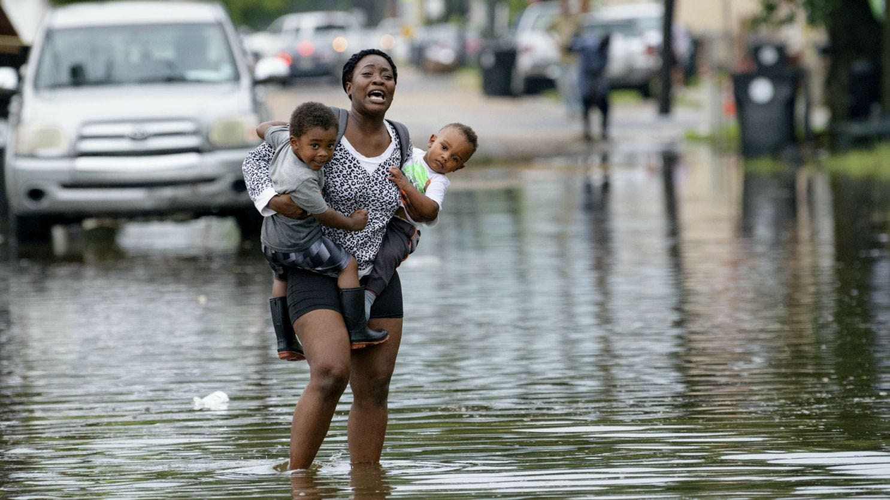

Orleans and around Orleans in my mind
Wish you get safer and happier times as soon as possible.


Sometimes Mother Nature decides to remind us how powerful it can be and during such kind of time safety is what we seek by all means. My heart and mind go to those who are living right now this hurricane which is on the other of this Atlantic ocean in front of which I am actually sitting and writing. Whish that all of you who are living this difficult time will get enough power to resist and be safe and alive. It’s important to know that there are people out there at thousands of miles who may care about us that’s what I am actually trying to do by telling out loud my feeling and support to everybody suffering right now from natural disasters precisely those now impacted by the hurricane Ida.
if it was not the progress that we, human beings, have achieved by connecting people and countries with billions of miles of fiber cable and satellites constellation and terrestrial antennas I would probably know of this storm event months after or even never. To say that we also human beings are power as Mother Nature and I wish and dream that days are coming we will entirely dominate mother nature and its asset of powerful events that could hurt us and have a safer and happy living world. Internet is about communities like I was right in the middle of the hurricane Ida while I am sitting here in a quiet and calm country but god knows that when I was feeling the strength of the wind perched at the roof of this building I was not aware of this hurricane going on the other side of the Atlantic in my neighbors' homes. Now I know why those strong winds and know that keeping care of my neighbors just makes me be safer then I am supporting all of you who are in face of this Hurricane and encourage you to be strong and to not give up to try to be safe and happy again.
The internet is not only about business models, startups, venture capital, software, systems, and databases it is also about people like you and me. Because it connects people from all around the world, the internet is about US.
My mind goes to Orleans and its neighbors.
Wish you get safer and happier times as soon as possible.